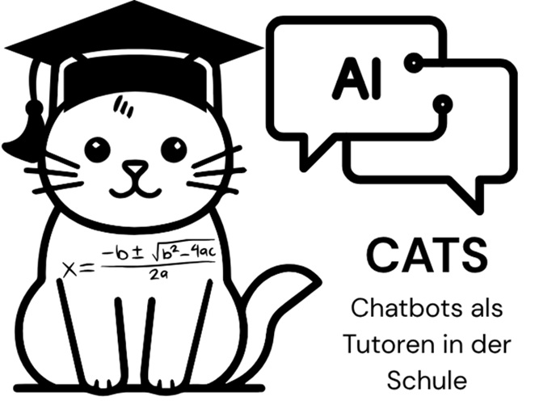

Aktuell laufend

Math CaTS (Chatbots als Tutor in Schulen)
Laufzeit: 2025–2026
Förderung: Bielefelder Nachwuchsfonds, Universität Bielefeld
Beteiligte Personen
Beteiligte Personen aus der Mathematikdidaktik: Valentin Katter, Alexander Salle
Beteiligte Personen aus der pädagogischen Psychologie: Martin Laun, Fabian Wolff
Weitere Informationen
Übersicht über die laufenden Erkundungsbereiche an der Universität Bielefeld: Universität Bielefeld – Erkundungsbereiche
Das Projekt untersucht, wie Schülerinnen und Schüler beim Bearbeiten mathematischer Modellierungsaufgaben durch KI-basierte Chatbots unterstützt werden und wie sich diese Unterstützung von menschlichem Tutoring unterscheidet. Im Zentrum steht die Frage, wie Lernprozesse in der Interaktion mit generativer KI tatsächlich ablaufen und welche Faktoren erfolgreiche Bearbeitung und nachhaltiges Lernen beeinflussen.
In einer experimentellen Studie arbeiteten über 300 Schülerinnen und Schüler der Jahrgangsstufen 8 und 9 an komplexen Modellierungsaufgaben. Dabei erhielten sie entweder Unterstützung durch einen KI-Chatbot (ChatGPT im Voice-Modus) oder durch menschliche Tutor*innen. Die Leistungen wurden sowohl während der unterstützten Bearbeitung als auch in einer anschließenden Transferaufgabe ohne Unterstützung erfasst.
Ergänzend wurde in einer vertiefenden Analyse mit 103 Lernenden untersucht, wie sich die Interaktion mit der KI konkret gestaltet. Dazu wurde das Konzept der interaktionalen Granularität entwickelt. Es beschreibt, wie viele Lösungsschritte in einer einzelnen KI-Antwort enthalten sind und erlaubt damit eine detaillierte Rekonstruktion der Unterstützungsprozesse im Dialog zwischen Lernenden und KI.
Ergebnisse
Die Ergebnisse zeigen ein differenziertes Bild:
- Menschliche Tutor*innen führen zu besseren Ergebnissen während der unterstützten Aufgabenbearbeitung.
- Für die eigenständige Bearbeitung ähnlicher Aufgaben (Transfer) ergeben sich jedoch keine signifikanten Unterschiede zwischen KI- und menschlicher Unterstützung.
- Lernprozesse mit KI sind stark nutzergesteuert: Schülerinnen und Schüler können durch ihre Fragen aktiv beeinflussen, ob sie eher vollständige Lösungen erhalten oder schrittweise Unterstützung nutzen.
Zudem zeigen sich unterschiedliche Nutzungsstrategien: Einige Lernende greifen primär auf fertige Lösungen zurück (kognitive Entlastung), während andere die KI dialogisch zur schrittweisen Problembearbeitung einsetzen (Ko-Konstruktion). Diese Unterschiede verdeutlichen, dass ähnliche Leistungsergebnisse auf sehr unterschiedlichen Lernprozessen beruhen können.
Ein weiterer zentraler Befund ist die Bedeutung individueller Voraussetzungen: Neben mathematischen Vorkenntnissen spielt insbesondere das Vertrauen in den Umgang mit KI (AI-Selbstkonzept) eine wichtige Rolle dafür, wie effektiv Lernende die KI-Unterstützung nutzen. Insgesamt zeigt das Projekt, dass KI-basierte Tutoring-Systeme ein großes Potenzial für individualisierte Lernunterstützung bieten, jedoch derzeit menschliches Tutoring nicht vollständig ersetzen. Entscheidend für den Lernerfolg ist nicht allein die Technologie, sondern vor allem die Art und Weise, wie Lernende mit ihr interagieren.
Wichtige (Vorab-)veröffentlichungen
Alphabetisch sortiert:
- Katter, V.; Salle, A.; Wolff, A.; Laun, M. (2025). Eine Untersuchung zum Einfluss von ChatGPT auf den Modellierungsprozess von Achtklässler*innen. In: Beiträge zum Mathematikunterricht 2025.
- Katter, V., Salle, A., Laun, M., & Wolff, F. (2026a). Interaktionsgranularität voicebasierter KI-Unterstützung im Modellierungsprozess. Jahrestagung der Gesellschaft für Mathematik, Wuppertal.
- Katter, V., Salle, A., Laun, M., & Wolff, F. (2026b). Rethinking performance in AI-supported mathematical modelling: Between co-construction and cognitive offloading. [Manuscript submitted].
- Laun, M. & Wolff, F. (2025). Chatbots in education: Hype or help? A meta-analysis. Learning and Individual Differences, 119 (102646), 1–11. https://doi.org/10.1016/j.lindif.2025.102646
- Laun, M., Katter, V., Salle, A., & Wolff, F. (2026). Human tutors outperform ChatGPT, yet self-concept matters. [Manuscript submitted].
- Laun, M., Puderbach, L., Hirt, K., Wyss, E. L., Friemert, D., Hartmann, U. & Wolff, F. (2025). Chatbots in education: Outperforming students but perceived as less trustworthy. Contemporary Educational Psychology, 81 (102373), 1–10. http://dx.doi.org/10.1016/j.cedpsych.2025.102373